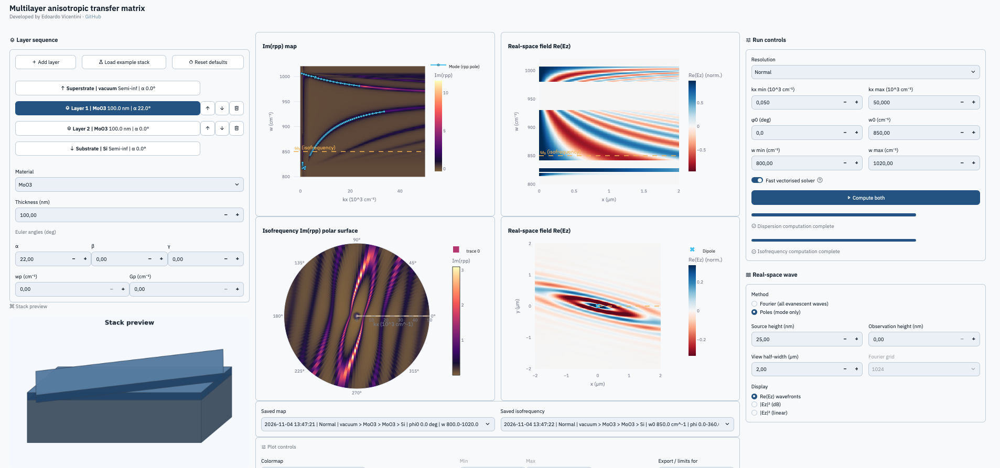

Dispersion maps
Im(rpp) versus ω and kx.
ω × kx → Im(rpp)Resolve polariton branches across frequency and in-plane wavevector for your layered system.
Read the user guideAnisotropic multilayer optics
From your stack to its polariton modes. Build anisotropic multilayers, rotate the crystal axes, and map the optical response with the generalized 4×4 transfer-matrix method.

Compute the p-polarised reflection rpp of layered media with arbitrary crystal orientation (Passler & Paarmann, 2017) and follow it from momentum space to real space.
Resolve polariton branches across frequency and in-plane wavevector for your layered system.
Read the user guideSweep the in-plane azimuth to reveal hyperbolic and elliptical contours of anisotropic crystals.
Theory & conventionsTrack the complex wavevector of each mode and overlay Re(kx) on the dispersion map.
Python APIVisualise normalized near-field intensity from a full isofrequency sweep. A band-limited estimate: check sampling convergence.
Materials catalogWork in the web app for interactive calculations, or call the in-house vectorized solver from your own scripts and notebooks.
Combine finite layers between semi-infinite boundaries. Set thickness and independent z–x–z Euler orientations for each layer.
Use the shared Materials Library, or define custom Lorentz and tabulated permittivities. Add an optional Drude term per layer.
Inspect interactive plots, export figures as PNG, and download CSV data for your own analysis.
Run locally or use the solver as a Python package. Batched NumPy with process-level parallelism, no separate numerical engine required.
git clone https://github.com/vicentini-edoardo/Multilayer_anisotropic_Transfer_Matrix.git
cd Multilayer_anisotropic_Transfer_Matrix
python -m pip install -e .
python -m streamlit run app.pyPlease cite the software version you used, together with the underlying formalism. The model assumes flat, laterally homogeneous layers with diagonal permittivity in each material’s principal frame.
E. Vicentini. Multilayer anisotropic transfer matrix (Version 0.1.0) [Computer software]. Zenodo, doi:10.5281/zenodo.23981616.
CITATION.cff
N. C. Passler and A. Paarmann. “Generalized 4×4 matrix formalism for light propagation in anisotropic stratified media.” J. Opt. Soc. Am. B 34, 2128 (2017).
doi:10.1364/JOSAB.34.002128
Start with a layer. Discover a polariton.